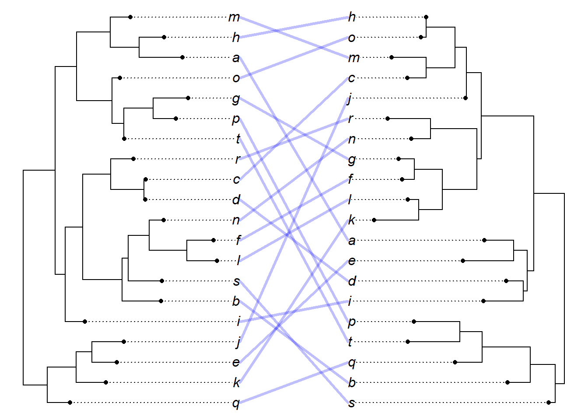
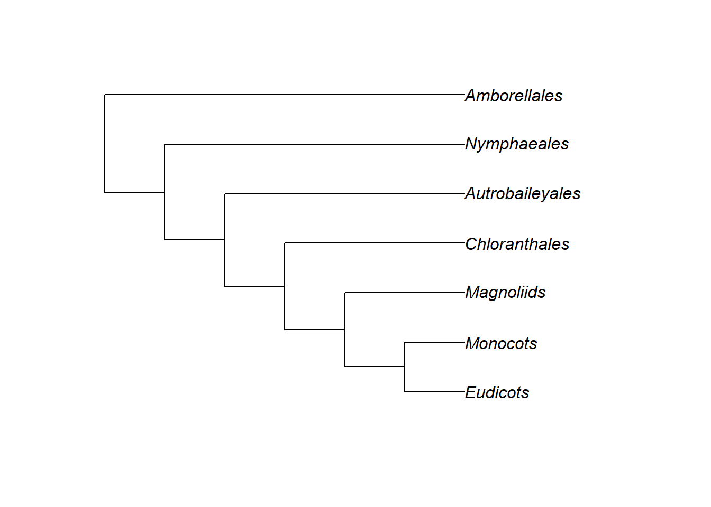
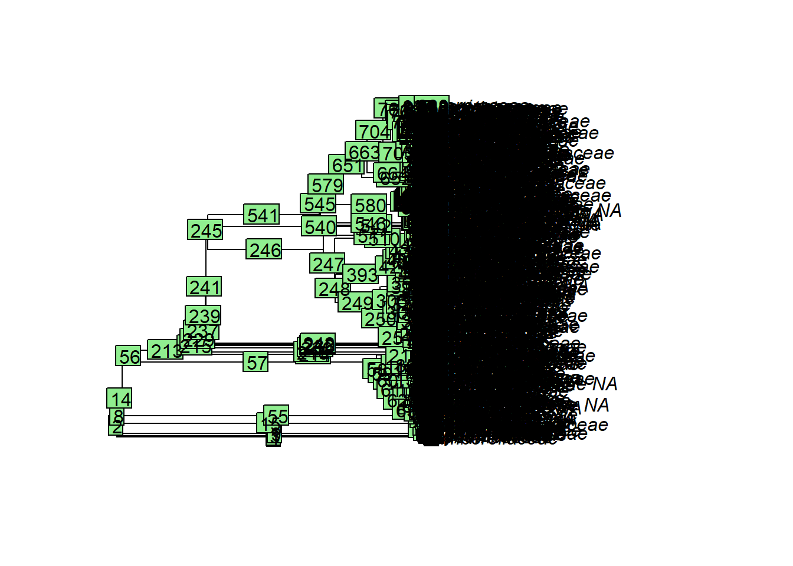
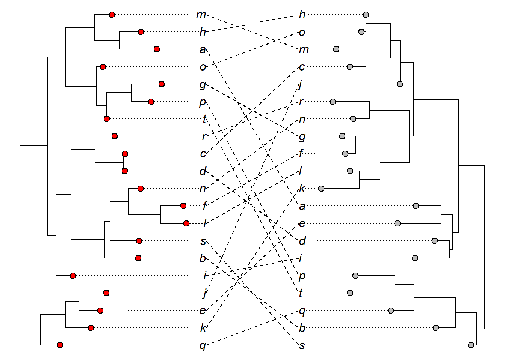
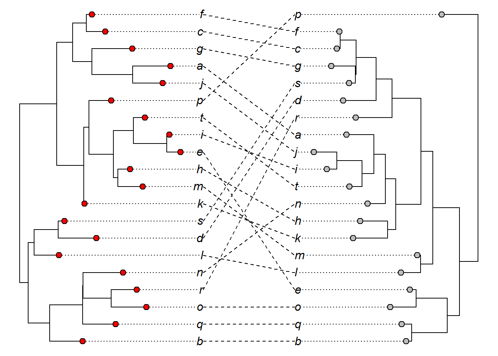

16 Exercícios
plants.tree <- "((((((((((((((Eudicots), Monocots), Magnoliids), Chloranthales), Autrobaileyales), Nymphaeales), Amborellales),((((Gnetales, Conifers), Gingkoales), Cycadales))),(((Sphenophytes, Marattiales), Filicales),(Ophioglossaceae, Psilophytes))),(Selaginellales, Lycopodiales)),(Bryophyta)),(Anthocerophyta)),(Marchantiophyta)));"
plants.tree <- read.tree(text = plants.tree)
plot(plants.tree)
edgelabels()
tree1 <- extract.clade(phy = plants.tree, node = 29)
plot(tree1)
# Tente a seleção do nó interativamente
# tree2 <- extract.clade(plants.tree, interactive = T)
# plot(tree2)plants.tree <- read.tree("./files/trees/apg.tree")
plot(plants.tree)
edgelabels()
plants.tree$node.label## [1] "angiosperms"
## [2] "nymphaeales_to_asterales"
## [3] "nymphaeales"
## [4] "cabombaceae_to_nymphaeaceae"
## [5] "austrobaileyales_to_asterales"
## [6] "austrobaileyales"
## [7] "schisandraceae_to_trimeniaceae"
## [8] "magnoliales_to_asterales"
## [9] "magnoliids"
## [10] "magnoliales_to_laurales"
## [11] "magnoliales"
## [12] "magnoliaceae_to_annonaceae"
## [13] "degeneriaceae_to_annonaceae"
## [14] "degeneriaceae_to_himantandraceae"
## [15] "eupomatiaceae_to_annonaceae"
## [16] "laurales"
## [17] "siparunaceae_to_lauraceae"
## [18] "siparunaceae_to_atherospermataceae"
## [19] "gomortegaceae_to_atherospermataceae"
## [20] "monimiaceae_to_lauraceae"
## [21] "hernandiaceae_to_lauraceae"
## [22] "piperales_to_canellales"
## [23] "piperales"
## [24] "asaraceae_to_aristolochiaceae"
## [25] "lactoridaceae_to_aristolochiaceae"
## [26] "piperaceae_to_saururaceae"
## [27] "canellales"
## [28] "poales_to_asterales"
## [29] "monocots"
## [30] "alismatales_to_poales"
## [31] "petrosaviales_to_poales"
## [32] "pandanales_to_poales"
## [33] "liliales_to_poales"
## [34] "asparagales_to_poales"
## [35] "commelinids"
## [36] "arecales"
## [37] "poales_to_zingiberales"
## [38] "poales"
## [39] "typhaceae_to_bromeliaceae"
## [40] "rapateaceae_to_poaceae"
## [41] "xyridaceae_to_poaceae"
## [42] "xyridaceae_to_cyperaceae"
## [43] "xyridaceae_to_eriocaulaceae"
## [44] "mayacaceae_to_cyperaceae"
## [45] "thurniaceae_to_cyperaceae"
## [46] "juncaceae_to_cyperaceae"
## [47] "anarthriaceae_to_poaceae"
## [48] "anarthriaceae_to_restionaceae"
## [49] "centrolepidaceae_to_restionaceae"
## [50] "flagellariaceae_to_poaceae"
## [51] "joinvilleaceae_to_poaceae"
## [52] "joinvilleaceae_to_ecdeiocoleaceae"
## [53] "commelinales_to_zingiberales"
## [54] "commelinales"
## [55] "commelinaceae_to_hanguanaceae"
## [56] "philydraceae_to_pontederiaceae"
## [57] "haemodoraceae_to_pontederiaceae"
## [58] "zingiberales"
## [59] "musaceae_to_costaceae"
## [60] "musaceae_to_lowiaceae"
## [61] "strelitziaceae_to_lowiaceae"
## [62] "cannaceae_to_costaceae"
## [63] "cannaceae_to_marantaceae"
## [64] "zingiberaceae_to_costaceae"
## [65] "asparagales"
## [66] "boryaceae_to_asparagaceae"
## [67] "boryaceae_to_hypoxidaceae"
## [68] "blandfordiaceae_to_hypoxidaceae"
## [69] "lanariaceae_to_hypoxidaceae"
## [70] "asteliaceae_to_hypoxidaceae"
## [71] "ixioliriaceae_to_asparagaceae"
## [72] "ixioliriaceae_to_tecophilaeaceae"
## [73] "doryanthaceae_to_asparagaceae"
## [74] "iridaceae_to_asparagaceae"
## [75] "xeronemataceae_to_asparagaceae"
## [76] "asphodelaceae_to_asparagaceae"
## [77] "asphodelaceae_to_xanthorrhoeaceae"
## [78] "amaryllidaceae_to_asparagaceae"
## [79] "liliales"
## [80] "melanthiaceae_to_liliaceae"
## [81] "petermanniaceae_to_alstroemeriaceae"
## [82] "colchicaceae_to_alstroemeriaceae"
## [83] "rhipogonaceae_to_liliaceae"
## [84] "rhipogonaceae_to_philesiaceae"
## [85] "smilacaceae_to_liliaceae"
## [86] "dioscoreales_to_pandanales"
## [87] "dioscoreales"
## [88] "burmanniaceae_to_dioscoreaceae"
## [89] "pandanales"
## [90] "stemonaceae_to_cyclanthaceae"
## [91] "pandanaceae_to_cyclanthaceae"
## [92] "alismatales"
## [93] "tofieldiaceae_to_potamogetonaceae"
## [94] "hydrocharitaceae_to_potamogetonaceae"
## [95] "hydrocharitaceae_to_alismataceae"
## [96] "hydrocharitaceae_to_butomaceae"
## [97] "scheuchzeriaceae_to_potamogetonaceae"
## [98] "aponogetonaceae_to_potamogetonaceae"
## [99] "juncaginaceae_to_potamogetonaceae"
## [100] "maundiaceae_to_potamogetonaceae"
## [101] "posidoniaceae_to_potamogetonaceae"
## [102] "posidoniaceae_to_cymodoceaceae"
## [103] "ruppiaceae_to_cymodoceaceae"
## [104] "zosteraceae_to_potamogetonaceae"
## [105] "ceratophyllales_to_asterales"
## [106] "eudicots"
## [107] "ranunculales"
## [108] "lardizabalaceae_to_papaveraceae"
## [109] "lardizabalaceae_to_ranunculaceae"
## [110] "lardizabalaceae_to_circaeasteraceae"
## [111] "menispermaceae_to_ranunculaceae"
## [112] "berberidaceae_to_ranunculaceae"
## [113] "proteales_to_asterales"
## [114] "proteales"
## [115] "nelumbonaceae_to_proteaceae"
## [116] "platanaceae_to_proteaceae"
## [117] "trochodendrales_to_asterales"
## [118] "buxales_to_asterales"
## [119] "gunnerales_to_asterales"
## [120] "gunnerales"
## [121] "superrosids_to_superasterids"
## [122] "superrosids"
## [123] "rosids"
## [124] "malvids_to_fabids"
## [125] "fabids"
## [126] "nitrogenfixing_to_COM"
## [127] "nitrogenfixing"
## [128] "fabales"
## [129] "fabaceae_to_polygalaceae"
## [130] "surianaceae_to_polygalaceae"
## [131] "rosales_to_fagales"
## [132] "rosales"
## [133] "rhamnaceae_to_urticaceae"
## [134] "barbeyaceae_to_dirachmaceae"
## [135] "elaeagnaceae_to_dirachmaceae"
## [136] "ulmaceae_to_urticaceae"
## [137] "cannabaceae_to_urticaceae"
## [138] "moraceae_to_urticaceae"
## [139] "cucurbitales_to_fagales"
## [140] "fagales"
## [141] "fagaceae_to_casuarinaceae"
## [142] "myricaceae_to_casuarinaceae"
## [143] "myricaceae_to_juglandaceae"
## [144] "ticodendraceae_to_casuarinaceae"
## [145] "ticodendraceae_to_betulaceae"
## [146] "cucurbitales"
## [147] "corynocarpaceae_to_begoniaceae"
## [148] "corynocarpaceae_to_coriariaceae"
## [149] "corynocarpaceae_to_apodanthaceae"
## [150] "cucurbitaceae_to_begoniaceae"
## [151] "tetramelaceae_to_begoniaceae"
## [152] "datiscaceae_to_begoniaceae"
## [153] "COM"
## [154] "oxalidales_to_malpighiales"
## [155] "oxalidales"
## [156] "connaraceae_to_elaeocarpaceae"
## [157] "connaraceae_to_oxalidaceae"
## [158] "cunoniaceae_to_elaeocarpaceae"
## [159] "brunelliaceae_to_elaeocarpaceae"
## [160] "brunelliaceae_to_cephalotaceae"
## [161] "malpighiales"
## [162] "ctenolophonaceae_to_podostemaceae"
## [163] "ctenolophonaceae_to_rhizophoraceae"
## [164] "erythroxylaceae_to_rhizophoraceae"
## [165] "irvingiaceae_to_pandaceae"
## [166] "ochnaceae_to_podostemaceae"
## [167] "bonnetiaceae_to_podostemaceae"
## [168] "bonnetiaceae_to_clusiaceae"
## [169] "calophyllaceae_to_podostemaceae"
## [170] "hypericaceae_to_podostemaceae"
## [171] "humiriaceae_to_ixonanthaceae"
## [172] "humiriaceae_to_salicaceae"
## [173] "achariaceae_to_salicaceae"
## [174] "goupiaceae_to_salicaceae"
## [175] "goupiaceae_to_violaceae"
## [176] "passifloraceae_to_salicaceae"
## [177] "lacistemataceae_to_salicaceae"
## [178] "peraceae_to_ixonanthaceae"
## [179] "peraceae_to_euphorbiaceae"
## [180] "rafflesiaceae_to_euphorbiaceae"
## [181] "phyllanthaceae_to_ixonanthaceae"
## [182] "phyllanthaceae_to_picrodendraceae"
## [183] "linaceae_to_ixonanthaceae"
## [184] "lophopyxidaceae_to_chrysobalanaceae"
## [185] "lophopyxidaceae_to_putranjivaceae"
## [186] "centroplacaceae_to_malpighiaceae"
## [187] "elatinaceae_to_malpighiaceae"
## [188] "balanopaceae_to_chrysobalanaceae"
## [189] "trigoniaceae_to_chrysobalanaceae"
## [190] "trigoniaceae_to_dichapetalaceae"
## [191] "euphroniaceae_to_chrysobalanaceae"
## [192] "celastrales"
## [193] "zygophyllales"
## [194] "malvids"
## [195] "geraniales_to_myrtales"
## [196] "geraniales"
## [197] "melianthaceae_to_greyiaceae"
## [198] "vivianiaceae_to_greyiaceae"
## [199] "francoaceae_to_greyiaceae"
## [200] "myrtales"
## [201] "onagraceae_to_penaeaceae"
## [202] "onagraceae_to_lythraceae"
## [203] "myrtaceae_to_penaeaceae"
## [204] "myrtaceae_to_vochysiaceae"
## [205] "melastomataceae_to_penaeaceae"
## [206] "crypteroniaceae_to_penaeaceae"
## [207] "alzateaceae_to_penaeaceae"
## [208] "crossosomatales_to_malvales"
## [209] "crossosomatales"
## [210] "staphyleaceae_to_crossosomataceae"
## [211] "guamatelaceae_to_crossosomataceae"
## [212] "stachyuraceae_to_crossosomataceae"
## [213] "aphloiaceae_to_strasburgeriaceae"
## [214] "geissolomataceae_to_strasburgeriaceae"
## [215] "picramniales_to_malvales"
## [216] "sapindales_to_malvales"
## [217] "huerteales_to_malvales"
## [218] "brassicales_to_malvales"
## [219] "malvales"
## [220] "thymelaeaceae_to_malvaceae"
## [221] "sphaerosepalaceae_to_malvaceae"
## [222] "cistaceae_to_dipterocarpaceae"
## [223] "sarcolaenaceae_to_dipterocarpaceae"
## [224] "cytinaceae_to_muntingiaceae"
## [225] "brassicales"
## [226] "akaniaceae_to_tropaeolaceae"
## [227] "moringaceae_to_brassicaceae"
## [228] "moringaceae_to_caricaceae"
## [229] "setchellanthaceae_to_brassicaceae"
## [230] "limnanthaceae_to_brassicaceae"
## [231] "koeberliniaceae_to_brassicaceae"
## [232] "koeberliniaceae_to_salvadoraceae"
## [233] "bataceae_to_salvadoraceae"
## [234] "emblingiaceae_to_brassicaceae"
## [235] "pentadiplandraceae_to_brassicaceae"
## [236] "resedaceae_to_gyrostemonaceae"
## [237] "capparaceae_to_brassicaceae"
## [238] "cleomaceae_to_brassicaceae"
## [239] "huerteales"
## [240] "gerrardinaceae_to_petenaeaceae"
## [241] "tapisciaceae_to_dipentodontaceae"
## [242] "sapindales"
## [243] "nitrariaceae_to_rutaceae"
## [244] "kirkiaceae_to_rutaceae"
## [245] "kirkiaceae_to_anacardiaceae"
## [246] "burseraceae_to_anacardiaceae"
## [247] "sapindaceae_to_rutaceae"
## [248] "simaroubaceae_to_rutaceae"
## [249] "saxifragales"
## [250] "paeoniaceae_to_saxifragaceae"
## [251] "paeoniaceae_to_daphniphyllaceae"
## [252] "altingiaceae_to_daphniphyllaceae"
## [253] "hamamelidaceae_to_daphniphyllaceae"
## [254] "cercidiphyllaceae_to_daphniphyllaceae"
## [255] "crassulaceae_to_saxifragaceae"
## [256] "crassulaceae_to_haloragaceae"
## [257] "aphanopetalaceae_to_haloragaceae"
## [258] "tetracarpaeaceae_to_haloragaceae"
## [259] "penthoraceae_to_haloragaceae"
## [260] "cynomoriaceae_to_saxifragaceae"
## [261] "iteaceae_to_saxifragaceae"
## [262] "grossulariaceae_to_saxifragaceae"
## [263] "superasterids"
## [264] "berberidopsidales"
## [265] "santalales_to_asterales"
## [266] "santalales"
## [267] "coulaceae_to_santalaceae"
## [268] "ximeniaceae_to_santalaceae"
## [269] "octoknemaceae_to_santalaceae"
## [270] "schoepfiaceae_to_santalaceae"
## [271] "schoepfiaceae_to_loranthaceae"
## [272] "schoepfiaceae_to_misodendraceae"
## [273] "opiliaceae_to_santalaceae"
## [274] "balanophoraceae_to_santalaceae"
## [275] "comandraceae_to_viscaceae"
## [276] "thesiaceae_to_cervantesiaceae"
## [277] "nanodeaceae_to_viscaceae"
## [278] "santalaceae_to_viscaceae"
## [279] "amphorogynaceae_to_viscaceae"
## [280] "caryophyllales_to_asterales"
## [281] "caryophyllales"
## [282] "droseraceae_to_polygonaceae"
## [283] "droseraceae_to_dioncophyllaceae"
## [284] "nepenthaceae_to_dioncophyllaceae"
## [285] "drosophyllaceae_to_dioncophyllaceae"
## [286] "ancistrocladaceae_to_dioncophyllaceae"
## [287] "frankeniaceae_to_polygonaceae"
## [288] "frankeniaceae_to_tamaricaceae"
## [289] "plumbaginaceae_to_polygonaceae"
## [290] "rhabdodendraceae_to_cactaceae"
## [291] "simmondsiaceae_to_cactaceae"
## [292] "asteropeiaceae_to_cactaceae"
## [293] "asteropeiaceae_to_physenaceae"
## [294] "macarthuriaceae_to_cactaceae"
## [295] "microteaceae_to_cactaceae"
## [296] "caryophyllaceae_to_cactaceae"
## [297] "caryophyllaceae_to_amaranthaceae"
## [298] "achatocarpaceae_to_amaranthaceae"
## [299] "stegnospermataceae_to_cactaceae"
## [300] "limeaceae_to_cactaceae"
## [301] "lophiocarpaceae_to_cactaceae"
## [302] "lophiocarpaceae_to_nyctaginaceae"
## [303] "kewaceae_to_nyctaginaceae"
## [304] "barbeuiaceae_to_nyctaginaceae"
## [305] "aizoaceae_to_nyctaginaceae"
## [306] "gisekiaceae_to_nyctaginaceae"
## [307] "molluginaceae_to_cactaceae"
## [308] "montiaceae_to_cactaceae"
## [309] "halophytaceae_to_cactaceae"
## [310] "halophytaceae_to_basellaceae"
## [311] "talinaceae_to_cactaceae"
## [312] "anacampserotaceae_to_cactaceae"
## [313] "portulacaceae_to_cactaceae"
## [314] "asterids"
## [315] "cornales"
## [316] "loasaceae_to_grubbiaceae"
## [317] "loasaceae_to_hydrangeaceae"
## [318] "curtisiaceae_to_grubbiaceae"
## [319] "ericales_to_asterales"
## [320] "ericales"
## [321] "balsaminaceae_to_tetrameristaceae"
## [322] "marcgraviaceae_to_tetrameristaceae"
## [323] "polemoniaceae_to_ericaceae"
## [324] "polemoniaceae_to_fouquieriaceae"
## [325] "sladeniaceae_to_ericaceae"
## [326] "sladeniaceae_to_pentaphylacaceae"
## [327] "sapotaceae_to_primulaceae"
## [328] "ebenaceae_to_primulaceae"
## [329] "theaceae_to_ericaceae"
## [330] "symplocaceae_to_ericaceae"
## [331] "symplocaceae_to_diapensiaceae"
## [332] "styracaceae_to_diapensiaceae"
## [333] "sarraceniaceae_to_ericaceae"
## [334] "sarraceniaceae_to_actinidiaceae"
## [335] "roridulaceae_to_actinidiaceae"
## [336] "clethraceae_to_ericaceae"
## [337] "cyrillaceae_to_ericaceae"
## [338] "lamids_to_campanulids"
## [339] "campanulids"
## [340] "aquifoliales"
## [341] "cardiopteridaceae_to_stemonuraceae"
## [342] "aquifoliaceae_to_phyllonomaceae"
## [343] "helwingiaceae_to_phyllonomaceae"
## [344] "asterales_to_paracryphiales"
## [345] "asterales"
## [346] "rousseaceae_to_campanulaceae"
## [347] "pentaphragmataceae_to_asteraceae"
## [348] "alseuosmiaceae_to_asteraceae"
## [349] "alseuosmiaceae_to_argophyllaceae"
## [350] "phellinaceae_to_argophyllaceae"
## [351] "stylidiaceae_to_asteraceae"
## [352] "menyanthaceae_to_asteraceae"
## [353] "goodeniaceae_to_asteraceae"
## [354] "calyceraceae_to_asteraceae"
## [355] "bruniales_to_paracryphiales"
## [356] "bruniales"
## [357] "apiales_to_paracryphiales"
## [358] "apiales"
## [359] "torricelliaceae_to_apiaceae"
## [360] "griseliniaceae_to_apiaceae"
## [361] "pittosporaceae_to_apiaceae"
## [362] "araliaceae_to_apiaceae"
## [363] "myodocarpaceae_to_apiaceae"
## [364] "dipsacales_to_paracryphiales"
## [365] "dipsacales"
## [366] "lamids"
## [367] "metteniusales_to_solanales"
## [368] "garryales_to_solanales"
## [369] "boraginales_to_solanales"
## [370] "solanales"
## [371] "montiniaceae_to_hydroleaceae"
## [372] "sphenocleaceae_to_hydroleaceae"
## [373] "convolvulaceae_to_solanaceae"
## [374] "lamiales"
## [375] "carlemanniaceae_to_orobanchaceae"
## [376] "carlemanniaceae_to_oleaceae"
## [377] "tetrachondraceae_to_orobanchaceae"
## [378] "platanthera_to_orobanchaceae"
## [379] "peltanthera_to_gesneriaceae"
## [380] "calceolariaceae_to_gesneriaceae"
## [381] "plantaginaceae_to_orobanchaceae"
## [382] "scrophulariaceae_to_orobanchaceae"
## [383] "stilbaceae_to_orobanchaceae"
## [384] "byblidaceae_to_orobanchaceae"
## [385] "byblidaceae_to_linderniaceae"
## [386] "pedaliaceae_to_orobanchaceae"
## [387] "pedaliaceae_to_acanthaceae"
## [388] "bignoniaceae_to_orobanchaceae"
## [389] "schlegeliaceae_to_orobanchaceae"
## [390] "schlegeliaceae_to_verbenaceae"
## [391] "schlegeliaceae_to_lentibulariaceae"
## [392] "thomandersiaceae_to_verbenaceae"
## [393] "lamiaceae_to_orobanchaceae"
## [394] "mazaceae_to_orobanchaceae"
## [395] "phrymaceae_to_orobanchaceae"
## [396] "paulowniaceae_to_orobanchaceae"
## [397] "gentianales"
## [398] "loganiaceae_to_apocynaceae"
## [399] "loganiaceae_to_gelsemiaceae"
## [400] "gentianaceae_to_apocynaceae"
## [401] "garryales"
## [402] "icacinales"grep("fabales", plants.tree$node.label)## [1] 128plants.tree$edge## [,1] [,2]
## [1,] 439 1
## [2,] 439 440
## [3,] 440 441
## [4,] 441 2
## [5,] 441 442
## [6,] 442 3
## [7,] 442 4
## [8,] 440 443
## [9,] 443 444
## [10,] 444 5
## [11,] 444 445
## [12,] 445 6
## [13,] 445 7
## [14,] 443 446
## [15,] 446 447
## [16,] 447 448
## [17,] 448 449
## [18,] 449 8
## [19,] 449 450
## [20,] 450 9
## [21,] 450 451
## [22,] 451 452
## [23,] 452 10
## [24,] 452 11
## [25,] 451 453
## [26,] 453 12
## [27,] 453 13
## [28,] 448 454
## [29,] 454 14
## [30,] 454 455
## [31,] 455 456
## [32,] 456 15
## [33,] 456 457
## [34,] 457 16
## [35,] 457 17
## [36,] 455 458
## [37,] 458 18
## [38,] 458 459
## [39,] 459 19
## [40,] 459 20
## [41,] 447 460
## [42,] 460 461
## [43,] 461 462
## [44,] 462 21
## [45,] 462 463
## [46,] 463 22
## [47,] 463 23
## [48,] 461 24
## [49,] 461 464
## [50,] 464 25
## [51,] 464 26
## [52,] 460 465
## [53,] 465 27
## [54,] 465 28
## [55,] 446 29
## [56,] 446 466
## [57,] 466 467
## [58,] 467 468
## [59,] 468 469
## [60,] 469 470
## [61,] 470 471
## [62,] 471 472
## [63,] 472 473
## [64,] 473 474
## [65,] 474 30
## [66,] 474 31
## [67,] 473 475
## [68,] 475 476
## [69,] 476 477
## [70,] 477 32
## [71,] 477 33
## [72,] 476 478
## [73,] 478 34
## [74,] 478 479
## [75,] 479 480
## [76,] 480 481
## [77,] 481 35
## [78,] 481 36
## [79,] 480 482
## [80,] 482 37
## [81,] 482 483
## [82,] 483 38
## [83,] 483 484
## [84,] 484 39
## [85,] 484 40
## [86,] 479 485
## [87,] 485 486
## [88,] 486 41
## [89,] 486 487
## [90,] 487 42
## [91,] 487 43
## [92,] 485 488
## [93,] 488 44
## [94,] 488 489
## [95,] 489 490
## [96,] 490 45
## [97,] 490 46
## [98,] 489 47
## [99,] 475 491
## [100,] 491 492
## [101,] 492 493
## [102,] 493 48
## [103,] 493 49
## [104,] 492 494
## [105,] 494 50
## [106,] 494 495
## [107,] 495 51
## [108,] 495 52
## [109,] 491 496
## [110,] 496 53
## [111,] 496 497
## [112,] 497 498
## [113,] 498 54
## [114,] 498 499
## [115,] 499 55
## [116,] 499 56
## [117,] 497 500
## [118,] 500 501
## [119,] 501 57
## [120,] 501 58
## [121,] 500 502
## [122,] 502 59
## [123,] 502 60
## [124,] 472 503
## [125,] 503 61
## [126,] 503 504
## [127,] 504 505
## [128,] 505 62
## [129,] 505 506
## [130,] 506 63
## [131,] 506 507
## [132,] 507 64
## [133,] 507 508
## [134,] 508 65
## [135,] 508 66
## [136,] 504 509
## [137,] 509 510
## [138,] 510 67
## [139,] 510 68
## [140,] 509 511
## [141,] 511 69
## [142,] 511 512
## [143,] 512 70
## [144,] 512 513
## [145,] 513 71
## [146,] 513 514
## [147,] 514 515
## [148,] 515 72
## [149,] 515 73
## [150,] 514 516
## [151,] 516 74
## [152,] 516 75
## [153,] 471 517
## [154,] 517 76
## [155,] 517 77
## [156,] 517 518
## [157,] 518 78
## [158,] 518 519
## [159,] 519 79
## [160,] 519 520
## [161,] 520 80
## [162,] 520 81
## [163,] 518 521
## [164,] 521 522
## [165,] 522 82
## [166,] 522 83
## [167,] 521 523
## [168,] 523 84
## [169,] 523 85
## [170,] 470 524
## [171,] 524 525
## [172,] 525 86
## [173,] 525 526
## [174,] 526 87
## [175,] 526 88
## [176,] 524 527
## [177,] 527 89
## [178,] 527 90
## [179,] 527 528
## [180,] 528 91
## [181,] 528 529
## [182,] 529 92
## [183,] 529 93
## [184,] 469 94
## [185,] 468 530
## [186,] 530 95
## [187,] 530 531
## [188,] 531 96
## [189,] 531 532
## [190,] 532 533
## [191,] 533 534
## [192,] 534 97
## [193,] 534 98
## [194,] 533 99
## [195,] 532 535
## [196,] 535 100
## [197,] 535 536
## [198,] 536 101
## [199,] 536 537
## [200,] 537 102
## [201,] 537 538
## [202,] 538 103
## [203,] 538 539
## [204,] 539 540
## [205,] 540 104
## [206,] 540 541
## [207,] 541 105
## [208,] 541 106
## [209,] 539 542
## [210,] 542 107
## [211,] 542 108
## [212,] 467 109
## [213,] 466 543
## [214,] 543 110
## [215,] 543 544
## [216,] 544 545
## [217,] 545 111
## [218,] 545 546
## [219,] 546 547
## [220,] 547 548
## [221,] 548 112
## [222,] 548 113
## [223,] 547 549
## [224,] 549 114
## [225,] 549 550
## [226,] 550 115
## [227,] 550 116
## [228,] 546 117
## [229,] 544 551
## [230,] 551 552
## [231,] 552 118
## [232,] 552 553
## [233,] 553 119
## [234,] 553 554
## [235,] 554 120
## [236,] 554 121
## [237,] 551 555
## [238,] 555 122
## [239,] 555 556
## [240,] 556 123
## [241,] 556 557
## [242,] 557 558
## [243,] 558 124
## [244,] 558 125
## [245,] 557 559
## [246,] 559 560
## [247,] 560 561
## [248,] 561 562
## [249,] 562 563
## [250,] 563 564
## [251,] 564 565
## [252,] 565 566
## [253,] 566 126
## [254,] 566 567
## [255,] 567 127
## [256,] 567 568
## [257,] 568 128
## [258,] 568 129
## [259,] 565 569
## [260,] 569 570
## [261,] 570 130
## [262,] 570 571
## [263,] 571 572
## [264,] 572 131
## [265,] 572 573
## [266,] 573 132
## [267,] 573 133
## [268,] 573 134
## [269,] 571 574
## [270,] 574 135
## [271,] 574 575
## [272,] 575 136
## [273,] 575 576
## [274,] 576 137
## [275,] 576 138
## [276,] 569 577
## [277,] 577 578
## [278,] 578 139
## [279,] 578 579
## [280,] 579 140
## [281,] 579 580
## [282,] 580 581
## [283,] 581 141
## [284,] 581 142
## [285,] 580 582
## [286,] 582 583
## [287,] 583 143
## [288,] 583 144
## [289,] 582 145
## [290,] 577 584
## [291,] 584 146
## [292,] 584 585
## [293,] 585 586
## [294,] 586 587
## [295,] 587 147
## [296,] 587 148
## [297,] 586 149
## [298,] 585 588
## [299,] 588 150
## [300,] 588 589
## [301,] 589 151
## [302,] 589 590
## [303,] 590 152
## [304,] 590 153
## [305,] 564 591
## [306,] 591 592
## [307,] 592 593
## [308,] 593 154
## [309,] 593 594
## [310,] 594 595
## [311,] 595 155
## [312,] 595 156
## [313,] 594 596
## [314,] 596 157
## [315,] 596 597
## [316,] 597 598
## [317,] 598 158
## [318,] 598 159
## [319,] 597 160
## [320,] 592 599
## [321,] 599 600
## [322,] 600 601
## [323,] 601 161
## [324,] 601 602
## [325,] 602 162
## [326,] 602 163
## [327,] 600 603
## [328,] 603 164
## [329,] 603 165
## [330,] 600 604
## [331,] 604 166
## [332,] 604 605
## [333,] 605 606
## [334,] 606 167
## [335,] 606 168
## [336,] 605 607
## [337,] 607 169
## [338,] 607 608
## [339,] 608 170
## [340,] 608 171
## [341,] 599 609
## [342,] 609 610
## [343,] 610 172
## [344,] 610 611
## [345,] 611 173
## [346,] 611 612
## [347,] 612 613
## [348,] 613 174
## [349,] 613 175
## [350,] 612 614
## [351,] 614 176
## [352,] 614 615
## [353,] 615 177
## [354,] 615 178
## [355,] 609 616
## [356,] 616 617
## [357,] 617 179
## [358,] 617 618
## [359,] 618 180
## [360,] 618 181
## [361,] 616 619
## [362,] 619 620
## [363,] 620 182
## [364,] 620 183
## [365,] 619 621
## [366,] 621 184
## [367,] 621 185
## [368,] 599 622
## [369,] 622 623
## [370,] 623 186
## [371,] 623 187
## [372,] 622 188
## [373,] 622 624
## [374,] 624 189
## [375,] 624 625
## [376,] 625 190
## [377,] 625 191
## [378,] 622 626
## [379,] 626 192
## [380,] 626 627
## [381,] 627 628
## [382,] 628 193
## [383,] 628 194
## [384,] 627 629
## [385,] 629 195
## [386,] 629 196
## [387,] 591 630
## [388,] 630 197
## [389,] 630 198
## [390,] 563 631
## [391,] 631 199
## [392,] 631 200
## [393,] 562 632
## [394,] 632 633
## [395,] 633 634
## [396,] 634 201
## [397,] 634 635
## [398,] 635 202
## [399,] 635 636
## [400,] 636 203
## [401,] 636 637
## [402,] 637 204
## [403,] 637 205
## [404,] 633 638
## [405,] 638 206
## [406,] 638 639
## [407,] 639 640
## [408,] 640 207
## [409,] 640 208
## [410,] 639 641
## [411,] 641 642
## [412,] 642 209
## [413,] 642 210
## [414,] 641 643
## [415,] 643 211
## [416,] 643 644
## [417,] 644 212
## [418,] 644 645
## [419,] 645 213
## [420,] 645 214
## [421,] 632 646
## [422,] 646 647
## [423,] 647 648
## [424,] 648 215
## [425,] 648 649
## [426,] 649 216
## [427,] 649 650
## [428,] 650 217
## [429,] 650 218
## [430,] 647 651
## [431,] 651 219
## [432,] 651 652
## [433,] 652 220
## [434,] 652 221
## [435,] 646 653
## [436,] 653 222
## [437,] 653 654
## [438,] 654 655
## [439,] 655 656
## [440,] 656 657
## [441,] 657 223
## [442,] 657 658
## [443,] 658 224
## [444,] 658 659
## [445,] 659 225
## [446,] 659 226
## [447,] 659 660
## [448,] 660 227
## [449,] 660 661
## [450,] 661 228
## [451,] 661 229
## [452,] 659 662
## [453,] 662 230
## [454,] 662 231
## [455,] 659 232
## [456,] 656 663
## [457,] 663 664
## [458,] 664 233
## [459,] 664 234
## [460,] 663 665
## [461,] 665 666
## [462,] 666 235
## [463,] 666 236
## [464,] 665 667
## [465,] 667 237
## [466,] 667 668
## [467,] 668 238
## [468,] 668 669
## [469,] 669 670
## [470,] 670 239
## [471,] 670 671
## [472,] 671 240
## [473,] 671 241
## [474,] 669 672
## [475,] 672 242
## [476,] 672 673
## [477,] 673 243
## [478,] 673 674
## [479,] 674 244
## [480,] 674 245
## [481,] 673 246
## [482,] 673 675
## [483,] 675 247
## [484,] 675 676
## [485,] 676 248
## [486,] 676 249
## [487,] 655 677
## [488,] 677 678
## [489,] 678 250
## [490,] 678 251
## [491,] 677 679
## [492,] 679 252
## [493,] 679 253
## [494,] 654 680
## [495,] 680 254
## [496,] 680 681
## [497,] 681 255
## [498,] 681 682
## [499,] 682 683
## [500,] 683 256
## [501,] 683 684
## [502,] 684 257
## [503,] 684 258
## [504,] 682 685
## [505,] 685 259
## [506,] 685 686
## [507,] 686 260
## [508,] 686 261
## [509,] 686 262
## [510,] 561 263
## [511,] 560 687
## [512,] 687 264
## [513,] 687 688
## [514,] 688 689
## [515,] 689 265
## [516,] 689 690
## [517,] 690 266
## [518,] 690 691
## [519,] 691 267
## [520,] 691 692
## [521,] 692 268
## [522,] 692 269
## [523,] 688 693
## [524,] 693 694
## [525,] 694 270
## [526,] 694 695
## [527,] 695 271
## [528,] 695 696
## [529,] 696 272
## [530,] 696 697
## [531,] 697 273
## [532,] 697 274
## [533,] 693 698
## [534,] 698 275
## [535,] 698 699
## [536,] 699 276
## [537,] 699 700
## [538,] 700 277
## [539,] 700 278
## [540,] 559 279
## [541,] 559 701
## [542,] 701 702
## [543,] 702 280
## [544,] 702 281
## [545,] 701 703
## [546,] 703 704
## [547,] 704 282
## [548,] 704 283
## [549,] 704 705
## [550,] 705 284
## [551,] 705 706
## [552,] 706 285
## [553,] 706 286
## [554,] 706 287
## [555,] 706 707
## [556,] 707 288
## [557,] 707 708
## [558,] 708 709
## [559,] 709 710
## [560,] 710 289
## [561,] 710 290
## [562,] 709 291
## [563,] 708 711
## [564,] 711 292
## [565,] 711 712
## [566,] 712 293
## [567,] 712 713
## [568,] 713 294
## [569,] 713 714
## [570,] 714 295
## [571,] 714 296
## [572,] 713 715
## [573,] 715 297
## [574,] 715 716
## [575,] 716 298
## [576,] 716 717
## [577,] 717 299
## [578,] 717 300
## [579,] 703 718
## [580,] 718 719
## [581,] 719 720
## [582,] 720 721
## [583,] 721 301
## [584,] 721 722
## [585,] 722 302
## [586,] 722 723
## [587,] 723 303
## [588,] 723 724
## [589,] 724 304
## [590,] 724 305
## [591,] 720 725
## [592,] 725 726
## [593,] 726 306
## [594,] 726 307
## [595,] 725 727
## [596,] 727 308
## [597,] 727 309
## [598,] 719 728
## [599,] 728 310
## [600,] 728 729
## [601,] 729 311
## [602,] 729 730
## [603,] 730 731
## [604,] 731 312
## [605,] 731 313
## [606,] 730 732
## [607,] 732 314
## [608,] 732 733
## [609,] 733 315
## [610,] 733 734
## [611,] 734 735
## [612,] 735 316
## [613,] 735 736
## [614,] 736 317
## [615,] 736 318
## [616,] 734 737
## [617,] 737 319
## [618,] 737 738
## [619,] 738 320
## [620,] 738 739
## [621,] 739 740
## [622,] 740 321
## [623,] 740 741
## [624,] 741 322
## [625,] 741 742
## [626,] 742 323
## [627,] 742 743
## [628,] 743 324
## [629,] 743 744
## [630,] 744 325
## [631,] 744 326
## [632,] 744 327
## [633,] 744 328
## [634,] 744 329
## [635,] 739 745
## [636,] 745 330
## [637,] 745 746
## [638,] 746 331
## [639,] 746 747
## [640,] 747 748
## [641,] 748 332
## [642,] 748 333
## [643,] 748 334
## [644,] 747 749
## [645,] 749 335
## [646,] 749 750
## [647,] 750 336
## [648,] 750 751
## [649,] 751 337
## [650,] 751 338
## [651,] 718 752
## [652,] 752 753
## [653,] 753 754
## [654,] 754 755
## [655,] 755 339
## [656,] 755 340
## [657,] 754 341
## [658,] 754 342
## [659,] 754 756
## [660,] 756 343
## [661,] 756 344
## [662,] 753 345
## [663,] 752 757
## [664,] 757 758
## [665,] 758 759
## [666,] 759 346
## [667,] 759 760
## [668,] 760 347
## [669,] 760 348
## [670,] 758 761
## [671,] 761 762
## [672,] 762 349
## [673,] 762 350
## [674,] 761 351
## [675,] 761 763
## [676,] 763 764
## [677,] 764 352
## [678,] 764 353
## [679,] 763 765
## [680,] 765 354
## [681,] 765 766
## [682,] 766 355
## [683,] 766 356
## [684,] 763 767
## [685,] 767 357
## [686,] 767 358
## [687,] 767 768
## [688,] 768 769
## [689,] 769 359
## [690,] 769 770
## [691,] 770 360
## [692,] 770 361
## [693,] 768 771
## [694,] 771 772
## [695,] 772 362
## [696,] 772 773
## [697,] 773 363
## [698,] 773 364
## [699,] 771 774
## [700,] 774 365
## [701,] 774 775
## [702,] 775 366
## [703,] 775 367
## [704,] 757 776
## [705,] 776 777
## [706,] 777 778
## [707,] 778 779
## [708,] 779 368
## [709,] 779 369
## [710,] 778 780
## [711,] 780 370
## [712,] 780 781
## [713,] 781 371
## [714,] 781 372
## [715,] 777 782
## [716,] 782 783
## [717,] 783 784
## [718,] 784 373
## [719,] 784 374
## [720,] 783 785
## [721,] 785 375
## [722,] 785 786
## [723,] 786 787
## [724,] 787 376
## [725,] 787 788
## [726,] 788 377
## [727,] 788 378
## [728,] 786 789
## [729,] 789 379
## [730,] 789 790
## [731,] 790 380
## [732,] 790 791
## [733,] 791 381
## [734,] 791 792
## [735,] 792 382
## [736,] 792 383
## [737,] 782 384
## [738,] 782 793
## [739,] 793 794
## [740,] 794 385
## [741,] 794 386
## [742,] 793 795
## [743,] 795 796
## [744,] 796 387
## [745,] 796 797
## [746,] 797 388
## [747,] 797 798
## [748,] 798 389
## [749,] 798 799
## [750,] 799 390
## [751,] 799 800
## [752,] 800 391
## [753,] 800 801
## [754,] 801 392
## [755,] 801 393
## [756,] 795 802
## [757,] 802 803
## [758,] 803 394
## [759,] 803 395
## [760,] 802 396
## [761,] 776 804
## [762,] 804 805
## [763,] 805 806
## [764,] 806 807
## [765,] 807 808
## [766,] 808 809
## [767,] 809 397
## [768,] 809 810
## [769,] 810 398
## [770,] 810 399
## [771,] 808 811
## [772,] 811 400
## [773,] 811 401
## [774,] 807 812
## [775,] 812 402
## [776,] 812 813
## [777,] 813 814
## [778,] 814 403
## [779,] 814 404
## [780,] 813 815
## [781,] 815 405
## [782,] 815 816
## [783,] 816 817
## [784,] 817 406
## [785,] 817 818
## [786,] 818 407
## [787,] 818 408
## [788,] 816 819
## [789,] 819 409
## [790,] 819 820
## [791,] 820 410
## [792,] 820 821
## [793,] 821 411
## [794,] 821 822
## [795,] 822 823
## [796,] 823 412
## [797,] 823 413
## [798,] 822 824
## [799,] 824 825
## [800,] 825 414
## [801,] 825 415
## [802,] 825 416
## [803,] 824 826
## [804,] 826 417
## [805,] 826 827
## [806,] 827 828
## [807,] 828 829
## [808,] 829 418
## [809,] 829 419
## [810,] 828 830
## [811,] 830 420
## [812,] 830 421
## [813,] 827 831
## [814,] 831 422
## [815,] 831 832
## [816,] 832 423
## [817,] 832 833
## [818,] 833 424
## [819,] 833 834
## [820,] 834 425
## [821,] 834 426
## [822,] 807 427
## [823,] 807 835
## [824,] 835 428
## [825,] 835 836
## [826,] 836 837
## [827,] 837 429
## [828,] 837 430
## [829,] 836 838
## [830,] 838 431
## [831,] 838 432
## [832,] 807 433
## [833,] 806 839
## [834,] 839 434
## [835,] 839 435
## [836,] 805 436
## [837,] 804 840
## [838,] 840 437
## [839,] 840 438plants.tree$edge[257,1]## [1] 568Clado das Fixadoras de Nitrogênio (clado CFN) FABA-ROSA-CUCU-FAGA
tree <- extract.clade(phy = plants.tree, node = 565)
plot(tree)
nodelabels(tree$node.label, frame = "none", cex = 0.7)
Ordem Fabales
tree <- extract.clade(phy = plants.tree, node = 566)
plot(tree)
nodelabels(tree$node.label, frame = "none", cex = 0.7)